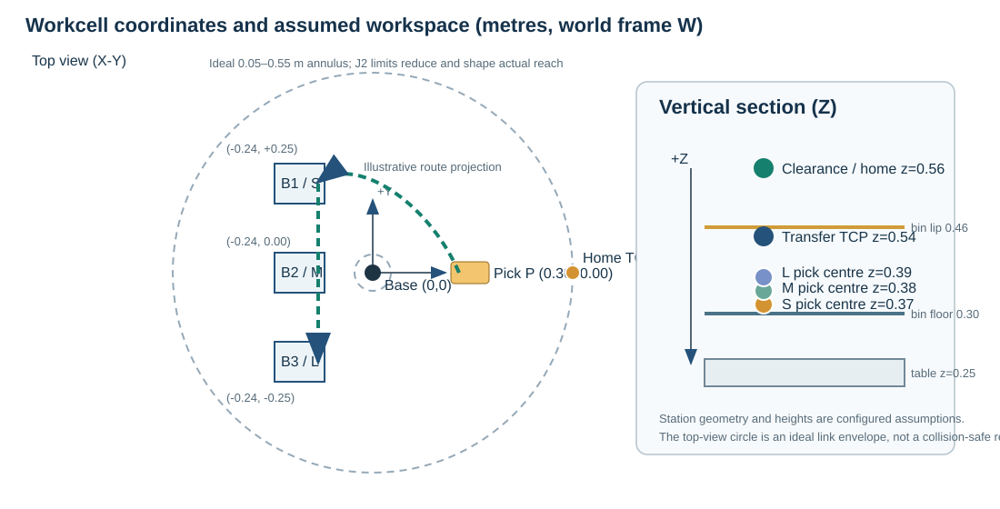
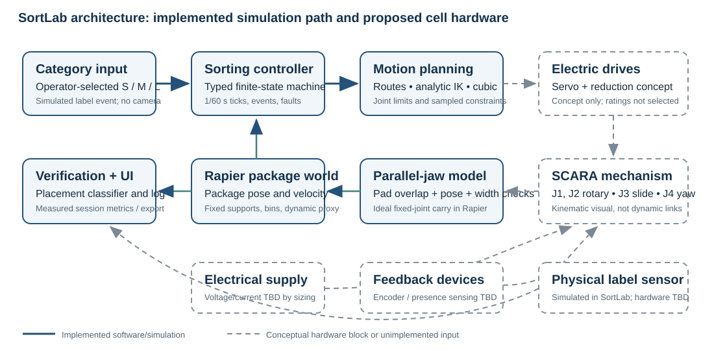
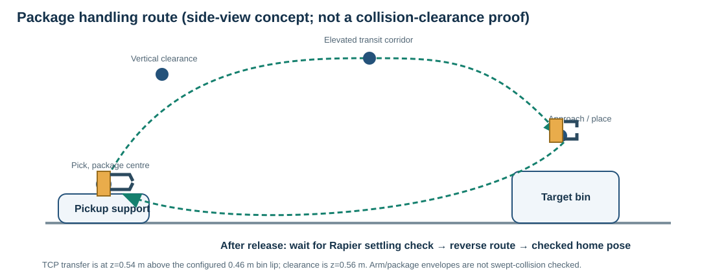
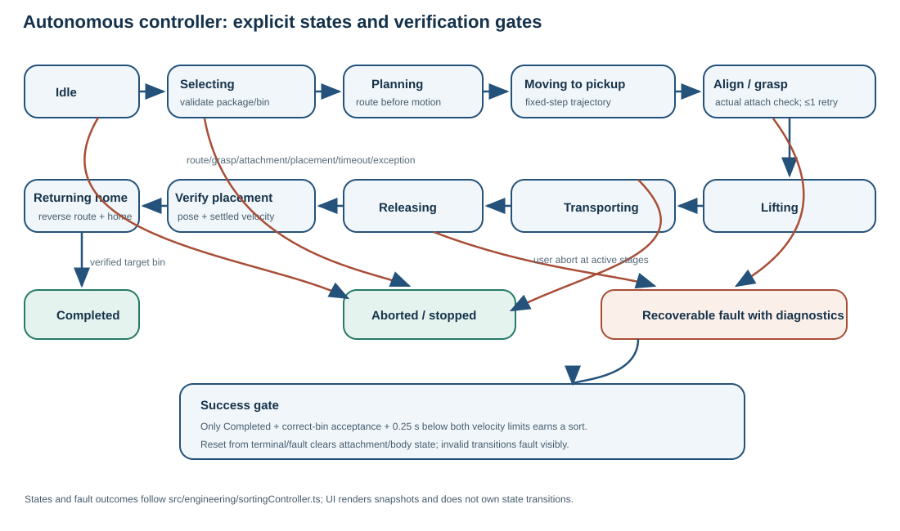
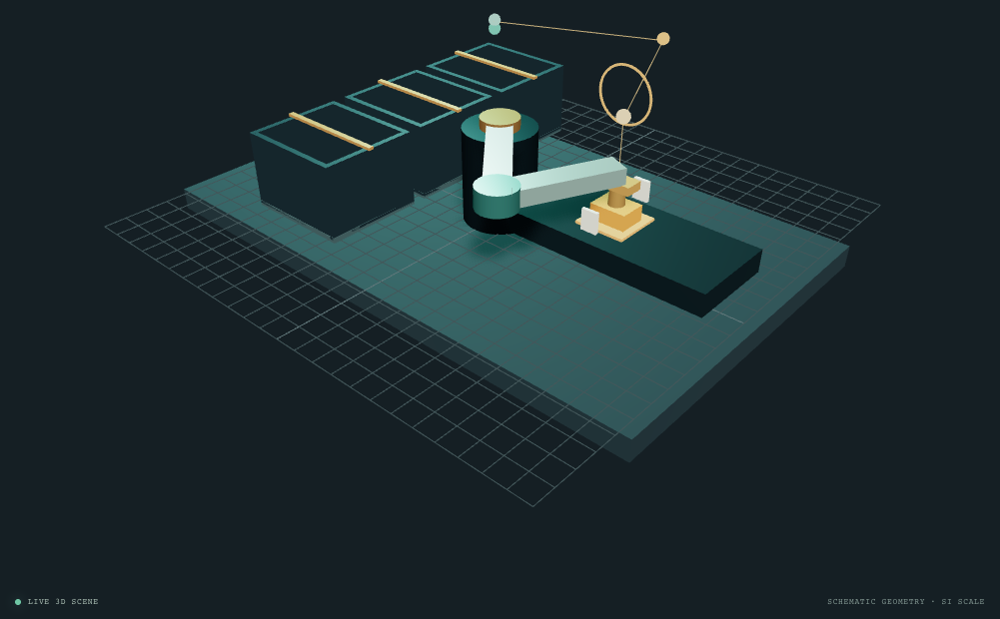

Student: [Full student name]
Registration / USN: [University registration number]
Course: Robotics · Programme: BCA UG · Semester: VII
Assignment option: 01 — Automated Warehouse Package Sorting Robot
Submission version: V3.0 · Project window in brief: 12–30 October 2026
Package classes: S→B1 · M→B2 · L→B3
Summary: A SCARA-style, four-axis software digital twin plans and executes package sorting using analytic kinematics, cubic trajectories, a deterministic Rapier package model, a gripper abstraction and physics-based placement verification.
Prepared with AI assistance for drafting and evidence organization. The student must verify all technical content and disclose assistance as required by the course brief.
SortLab is a software simulation of a compact warehouse cell that sorts three configured package classes from a single pickup station into three designated bins. The selected concept is a four-axis SCARA-style robot with two planar rotary joints, a vertical prismatic axis and a yaw wrist. The application combines forward and inverse kinematics, route planning, cubic motion profiles, a gripper model, Rapier rigid-body package physics, an autonomous finite-state controller and a live engineering dashboard. The validation runner executes the production controller and package simulation in fixed 1/60 s steps.
The final nominal campaign completed 100 of 100 attempts with verified placements in their configured bins, above the assignment evaluation target of 95%. However, the measured median cycle was 30.350 simulated seconds, missing the configured engineering aspiration of 12 seconds. Results apply to the fixed simulated workcell and initial conditions; they do not estimate physical robot reliability. No hardware, camera or real-world sensor was tested.
One package is presented at a time. Package identity is a deterministic simulated category input. Links are kinematic; the robot has no motor, mass/inertia or torque model. Packages are rigid proxies, including a rounded rigid proxy for the nominal pouch. Grip attachment is an ideal fixed joint. Configured dimensions, masses, friction and limits are engineering assumptions rather than measured warehouse data. Collision evaluation samples TCP paths; the project does not prove swept-link, tool or package clearance.
| Package | Proxy and dimensions L×W×H (m) | Assumed mass | Target |
|---|---|---|---|
| S / small | Carton, 0.08×0.06×0.04 | 0.10 kg | B1 |
| M / medium | Vertical cylinder, 0.12×0.09×0.06 | 0.30 kg | B2 |
| L / large | Rounded cuboid pouch proxy, 0.16×0.12×0.08 | 0.60 kg | B3 |
Pickup center is (+0.30, 0.00) m. Configured home joints are (0,0,0.56,0), whose forward-kinematics TCP target is (+0.55, 0.00, 0.56) m. Bin centers are B1 (−0.24,+0.25), B2 (−0.24,0), B3 (−0.24,−0.25) m. Assumed bin floor is z=0.30 m and lip z=0.46 m. The support surface is z=0.25 m. The dimensions and maps are defined in `src/engineering/config.ts` and documented in `docs/ENGINEERING-BASELINE.md`.

| Criterion | SCARA-style (selected) | Cartesian gantry (alternative) |
|---|---|---|
| Task fit | Planar transfers with vertical pickup/place suit two rotary axes plus Z travel. | Orthogonal axes also suit the task and simplify axis-aligned programming. |
| Workspace and footprint | Annular XY envelope can reach around the center column; compact base, but reach varies with angle. | Rectangular envelope is easy to reason about; rails and frame occupy the work area. |
| Control / mechanics | Requires nonlinear 2-link IK and branch/limit checks; comparatively few moving members. | Axis-wise Cartesian motion and calibration are straightforward; long rails need stiffness and alignment. |
| Tradeoff for this project | Good educational case for FK/IK and sorting reach; chosen for compact tabletop cell. | Would be a plausible production alternative where rectangular coverage or heavy vertical payload dominates. |
This is a qualitative design comparison. No cost, cycle-time or payload tests were run on either physical configuration. The SCARA-style concept is selected because the three bins and pickup are planar stations with a mostly vertical approach.
The base shoulder is the origin. X points forward, Y lateral and Z upward; angles are radians in the controller and displayed in degrees. J1 and J2 rotate about parallel Z axes. L1=.30 m and L2=.25 m connect shoulder to elbow and elbow to wrist. J3 translates the TCP in world Z over 0.30–0.58 m. J4 rotates tool yaw over ±180°. Thus the mechanism has four commanded DOF and controls planar position, height and tool yaw, not arbitrary 6D orientation. The normal J1/J2 limits are ±150°/±160°.
The ideal link-only annulus is r=|L1−L2| to L1+L2, or 0.05–0.55 m. Joint limits, tool geometry and obstacles reduce useful reach. In the measured 81×81 XY grid at configured home Z and yaw, 3,968 of 6,561 points were IK-reachable. This is a discrete reachability map, not an analytical collision-free workspace.
A plausible implementation would use rotary electric servos and reductions at J1/J2/J4, a linear electric actuator or screw drive for J3, and a parallel-jaw electric gripper. Electric drives offer controllable positioning without a dedicated pneumatic supply. This is a concept only: no motor, gearbox, screw, drive, power supply, braking system or safety-rated controller is selected or sized. The modeled tool has a palm and two virtual pads with 0.03–0.16 m jaw opening. The package is attached by a Rapier fixed joint after sensor-pad overlap and alignment checks; contact compliance and finger mechanics are not modeled.
For planar shoulder and elbow angles q1 and q2, the wrist position is the sum of two link vectors. J3 gives world TCP height in this model, and J4 contributes tool yaw [1]:
Use configured L1=.30 m, L2=.25 m and choose q1=30°, q2=−60°, q3=.45 m, q4=15°. Angles convert to radians for calculation: 30°=π/6, −60°=−π/3.
Therefore TCP = (.476314,.025000,.450000) m and yaw ψ=30°−60°+15°=−15°. This analytic example is consistent with `src/engineering/kinematics.ts`; it is a software calculation, not a measured robot pose.
For a target (x,y), set r²=x²+y² and solve the cosine law [1]:
The two signs represent elbow branches. For the example, r²≈.2275 m², yielding cos(q2)=.5 and branches q2=±60°. For the q2=−60° branch, q1=atan2(y,x)−atan2(L2 sin q2,L1+L2 cos q2)=30°. Given target yaw, q4=ψ−q1−q2=15°. The solver retains only branches that satisfy joint bounds. At the example target both branches may be mathematically reachable; route planning also checks continuity and configured limits.
In 5,000 deterministic FK→IK→FK samples, all returned a valid inverse branch. Maximum position residual was 4.9651×10⁻¹⁶ m; maximum wrapped yaw error was 1.7764×10⁻¹⁵ rad against 10⁻¹⁰ tolerances. These near-machine-precision values show numerical consistency in the equations and implementation, not actuator calibration or physical accuracy.
The browser application is written in TypeScript/React. The controller is a typed fixed-tick state machine separated from React. Kinematics, route generation, cubic trajectories, Rapier package simulation, placement classification, scenario setup and metrics are implemented as distinct engineering modules. UI actions call existing controller/physics APIs; the validation runner uses the same production controller, planner, physics and placement classifier [3].

Robot links are kinematically driven. Rapier package physics does not feed forces back into robot joints [5]. Browser frame accumulator drives fixed steps and may discard excess wall time after a delayed frame. Headless validation calls fixed steps directly, without sleeps; Rapier determinism depends on controlled initial conditions and construction order [4].
The normal route starts at the category-specific package-center pickup height above (0.30,0), rises to a clearance TCP height near .56 m, moves through a corridor at x=.12 m and y=+.40 m for B1/B2 or −.40 m for B3, approaches the bin center at clearance height, descends to placement, releases, then reverses the path and returns to the configured home joints (0,0,.56,0). Package category centers are z=.37/.38/.39 m for S/M/L.
Joint-space cubic motion provides direct joint bound and speed/acceleration checks [1]. Cartesian waypoints express the desired tool path and are resolved through IK, then sampled for limit/continuity checks. Sampling can miss collisions between samples, and link/tool/package swept-volume clearance is not established. The corridor is a route assumption, not a certified obstacle-free path.

For a rest-to-rest move from q0 to qf over duration T, the implemented cubic boundary profile can be written using u=t/T:
Illustrative J1 example: q0=0°, qf=30°, T=2 s. At t=1 s, u=.5 and q=15°. For Δq=π/6 rad, peak speed is 1.5Δq/T=.3927 rad/s; peak acceleration magnitude is 6Δq/T²=.7854 rad/s². Configured J1 limits are 1.5708 rad/s (90°/s) and 3.1416 rad/s² (180°/s²), so this example is below both. This is a transparent one-axis calculation, not a recorded route segment. Production profiles are checked with configured limits and sampled routes; final Phase 6 route maxima were .9223 of a speed limit and .8373 of an acceleration limit.
For a symmetric friction grip, each jaw applies normal force N. Assuming two contact faces, equal load sharing and Coulomb friction:
For the L package (m=.60 kg), safety factor S=2, g=9.81 m/s², configured vertical acceleration az=.30 m/s² and assumed μ=.50, N=2×.60×(9.81+.30)/(2×.50)=12.132 N per jaw. At assumed μ=.30, N=20.22 N. The model's virtual cap is 25 N per jaw. Code now uses g+az; regression test rejects the L package when the virtual cap is 12 N. This is not a physical force measurement or selected actuator rating. It ignores pressure distribution, package crush, compliance, off-center loads, jerk and torsional slip.
Configured capture tolerances are 12 mm package-center offset and 8° yaw. Both pad sensors must overlap, width must be within the jaw opening, and the virtual force gate must pass. A successful capture creates a fixed joint between gripper and package. Controller transport requires both the grasp result and actual attachment flag; it never treats a close command alone as success. Release removes the constraint; the package becomes dynamic and is stepped by Rapier.
For each bin, the package-center XY region is the interior bin rectangle shrunk by package projected half-extents at current yaw plus a 5 mm edge margin. Center Z must lie from floor+half-height−12 mm to lip−half-height−10 mm. The package must classify in the intended bin and have linear speed below .04 m/s and angular speed below .12 rad/s continuously for .25 simulated seconds. An 8 s verification timeout yields a fault. Outcomes distinguish correct accepted bin, incorrect bin, outside all regions, still settling/timeout, grasp failure, lost attachment and abort. The verdict uses simulated rigid-body state, not a camera or real sensor.

Explicit controller states include idle, selecting/validating, planning, moving to pickup, grasp alignment, lifting, transporting, releasing, verifying placement, returning home, completed, recoverable fault and aborted. Planning occurs before motion. A failed grasp permits a bounded retry; it cannot retry indefinitely. Loss of attachment during transport, invalid transition, route rejection or unverified placement stops predictable motion and records a typed reason. Abort is available during active phases. Reset detaches any package joint, restores package pose/controller state and supports a fresh cycle.
A controller cycle is successful only when the correct package is physically released in the configured acceptance region, satisfies settling criteria, and the controller returns home to completed. The dashboard and event log show the observed state/action, package, bin, grasp result, placement result, simulation time and faults. Scenario injections are distinct from ordinary operation and do not alter default physics.
| Hazard | Potential consequence | Proposed control / current boundary | Residual risk |
|---|---|---|---|
| Unexpected arm motion or pinch at joints/gripper | Impact, pinch or entrapment in a physical cell | Software locks conflicting manual controls during autonomy; route/joint bounds; real installation requires fixed guarding, interlocks, access control and safety-rated stop. | UI lock is not a protective device. No physical hazard assessment or safety-rated functions tested. |
| Package slips, falls or is crushed | Injury, product damage, uncontrolled drop | Simulated alignment/force gate, attachment check, bounded lift/transport and verified release; real design needs measured friction/crush limits and guarded catch area. | Fixed-joint model cannot slip or reproduce crushing. Virtual force is assumed and uncalibrated. |
| Arm/package collides with bin, conveyor or person | Equipment damage or impact | Configured target routes and discrete path checks; human exclusion, guarding and independently validated collision detection required for hardware. | No swept-link collision proof; kinematic links do not react to Rapier contacts. |
| Drive/power/control fault | Uncontrolled motion or loss of holding/braking | Concept requires drive fault monitoring, safe torque off/braking, watchdog and power isolation designed to applicable standards. | No physical drives, power model, safety PLC or fault-injection hardware exists. |
This hazard discussion is informed by OSHA industrial robot hazard and safeguarding guidance [6, 7]; it is not a formal risk assessment, safety validation or declaration of conformity.

A current dashboard capture should be recorded during the student's live demonstration if the instructor expects evidence of the full dashboard. The screenshot above is retained with the actual smoke-run provenance; no screenshot has been retouched to imply hardware.
The checked-in runner executes the production TypeScript `SortingController`, route planner, trajectory generator, `PackagePhysicsSimulation`, gripper attachment/release, fixed-step Rapier world and `classifyPlacement`. Each attempt initializes a fresh world with fixed configured package pose and runs at Δt=1/60 s. There are no timing sleeps or mocked successful nominal placements. Unique attempt records include package, target, simulation times, terminal state, fault and independently classified actual final package snapshot. Reproduction instructions and exact raw data are under `validation/`.
| Nominal measure | Measured follow-up campaign |
|---|---|
| Attempts / terminal outcomes | 100 / 100 |
| Distribution | S→B1 34; M→B2 33; L→B3 33 |
| Verified target-bin placements | 100; failed 0; aborted 0 |
| Success rate | 100/100 terminal attempts = 100%; 95% campaign target met |
| Cycle time for 100 completed cycles | Mean 30.680 s; median 30.350 s; minimum 29.917 s; maximum 31.783 s |
| Grasp outcomes | 100 first-attempt successes; 0 retries; 0 final failures |
| Placement / planning failures | Incorrect bin 0; outside 0; timeout 0; route rejection 0 |
| Max final settled linear / angular velocity | 2.0446×10⁻⁶ m/s; 6.5854×10⁻⁵ rad/s |
| Controller/physics clock difference | 5.22×10⁻¹³ s maximum absolute difference after clock correction |
Success denominator is all terminal nominal attempts; in-progress attempts are excluded. A successful attempt requires controller `completed`, accepted placement in the configured target, and independently classified final Rapier package state in that same bin. Cycle time runs from accepted controller start to terminal completion; setup and wall-clock time are excluded. The baseline performance aspiration is median ≤12 simulated seconds; it was missed (30.350 s median) and was not altered.
Fault campaign: 12 classes ×3 trials=36. All 36 expected outcomes matched; zero false-positive placements; all resets had no stale attachment or duplicate body/collider count; 36/36 nominal reruns succeeded. Route/grasp/timeout and release-response conditions use deterministic controller hooks; wrong/outside placement uses validation-only pose setup on the actual detached body; lost attachment uses Rapier detach; abort uses real controller abort commands. These are controlled software fault injections, not physical failure simulations.
During final audit, code review found that the documented safety-factored virtual grip equation included vertical acceleration but `attemptGrasp()` originally evaluated gravity only. The calculation omitted the configured 0.30 m/s² acceleration term. The code was corrected to use g+az; a regression test confirms an assumed 12 N/jaw cap rejects the L package at 12.13 N required. The follow-up campaign was rerun using the unchanged production path and placement criteria: 100/100 nominal placements and 36/36 injected fault outcomes. This correction improves consistency of the simulation's virtual gate only; it does not validate physical grip force.
SortLab demonstrates an integrated software path from package/category selection through reachable route planning, bounded trajectory motion, verified virtual grasp, physics stepping, release, settling-based bin classification, and return-home completion. Reproducible nominal and fault campaigns support the claim that this implementation meets the 95% nominal target under its fixed simulation conditions. The measured cycle speed does not meet the separate 12-second aspiration. The next engineering steps are swept-volume collision checking, dynamics and drive sizing, calibrated gripper/contact behavior, perception uncertainty, and a safeguarded physical validation campaign. These are future work, not completed capabilities.
Change log. V1.0 recorded feasibility assumptions; V2.0 added routes, physics, controller and dashboard; V3.0 added validation evidence and documented corrections. No faculty feedback is represented.
[1] K. M. Lynch and F. C. Park, Modern Robotics: Mechanics, Planning, and Control. Cambridge University Press, 2017. DOI: 10.1017/9781316661239. Text resources: Chapter 4, forward kinematics, https://modernrobotics.northwestern.edu/chapters/chapter4/; Chapter 6, inverse kinematics, https://modernrobotics.northwestern.edu/chapters/chapter6/; Chapter 9, point-to-point trajectories, https://modernrobotics.northwestern.edu/nu-gm-book-resource/9-1-and-9-2-point-to-point-trajectories-part-2-of-2/. Accessed 18 Oct 2026.
[2] Robotics Course Project Brief, “Robotics - Individual Design Project,” BCA UG Semester VII, Option 01, supplied course brief, accessed 18 Oct 2026. Original file: `Robotics Course Project Brief.docx` (Downloads).
[3] SortLab project source and records: `src/engineering/config.ts`, `kinematics.ts`, `routes.ts`, `trajectory.ts`, `packagePhysics.ts`, `sortingController.ts`, `validation.ts`; `docs/ENGINEERING-BASELINE.md`; `docs/ARCHITECTURE.md`; `docs/PHASE-1-IMPLEMENTATION.md` through `docs/PHASE-6-VALIDATION.md`; `validation/README.md` and generated `validation/results/` files. Local software evidence, version audited 18 Oct 2026.
[4] Dimforge, “Determinism,” Rapier JavaScript User’s Guide, https://rapier.rs/docs/user_guides/javascript/determinism/. Notes same initial conditions and construction order for repeatability; accessed 18 Oct 2026.
[5] Dimforge, “Rigid-body type,” Rapier JavaScript User’s Guide, https://rapier.rs/docs/user_guides/javascript/rigid_body_type/. Kinematic bodies ignore contact forces; accessed 18 Oct 2026.
[6] Occupational Safety and Health Administration, “Industrial Robot Systems and Industrial Robot System Safety,” Technical Manual, Section IV, Chapter 4, https://www.osha.gov/otm/section-4-safety-hazards/chapter-4. Accessed 18 Oct 2026.
[7] Occupational Safety and Health Administration, “Robotics: Hazards,” https://www.osha.gov/robotics/hazards. Accessed 18 Oct 2026.
In the project root, install dependencies from the lockfile and run `npm run validate:campaign`; to preserve this result, use `SORTLAB_CAMPAIGN_LABEL=phase7-grip-fix npm run validate:campaign`. The raw rows and generated summaries are `validation/results/nominal-phase7-grip-fix.json`, `nominal-phase7-grip-fix-summary.json`, `faults-phase7-grip-fix.json`, `faults-phase7-grip-fix-summary.json`, plus `numerics.json` and `physics.json`. The campaign writes these artifacts from actual production-path outcomes.
Additional report sources: `docs/PHASE-7-DELIVERABLES-AUDIT.md` maps requirements to evidence and gaps; `docs/PHASE-7-DEMO-PLAN.md` is the timed software demonstration script; `docs/PHASE-7-VIVA-PREP.md` contains evidence-bound oral examination questions and answers. The real browser capture is `deliverables/assets/workcell-smoke-capture.png`.
AI assistance disclosure: AI assistance was used to organize evidence, draft documentation and report prose, and check consistency. The student must independently inspect the implementation, calculations and cited material, revise the submission, and comply with course disclosure rules.